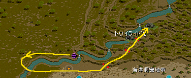
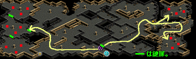
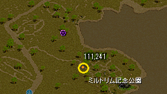
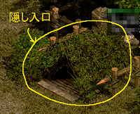
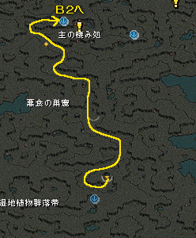

| No | クエスト名 | 受諾可能Lv | もらえるもの | およその報酬 （スフィア・パワキ有） |
およその累計報酬 | 備考 |
|---|---|---|---|---|---|---|
| １ | 協会内部把握（１） | １ | ０ | ダリンと会話後、 冒険家協会内にいるＮＰＣ数人と話して回る。 （１）協会長シュルトと話す → （２）協会事務官と話す → （３）協会テレポーターと話す → （４）協会専属魔法師と話す → （５）雑貨商人と話す 雑貨商人と話し終えると、 そのまま協会内部把握（２）に移行する。 |
||
| ２ | 協会内部把握（２） | １ | 協会羅針盤’ブルンネンシュティグ’ ×１０ ミュータントフラワー ×１０ |
１０，８００ | 引き続き、 冒険家協会内にいるＮＰＣと話して回る。 （６）コイン商人オベ（３人並んでいるうちの真ん中）と話す → （７）ギルド連合代理人と話す ギルド連合代理人は、冒険家協会に入った所からすぐ左下、 「ギルド広告室」にいる。 ギルド連合代理人と話し終えたら、 ダリンに戻り、話して終了。 |
|
| ３ | 協会図書館 | １ | 協会羅針盤’ブルンネンシュティグ’ ×１０ ミュータントフラワー ×１０ |
１０，８００ | ネーラと話す。 ネーラは冒険家協会ロビーから左下、図書館にいる。 →図書館の一番奥（左上）に行き、 右から２番目の棚を触り、１を選んでＵＰ。 →再びネーラと話す →ダリンに戻り、話して終了。 |
|
| ４ | 冒険家協会ブリッジヘッド支部 | １ | 協会羅針盤’ブルンネンシュティグ’ ×１０ ミュータントフラワー ×１０ |
２８，５９０ | 協会テレポーターと話し、１→１でブリッジヘッド支部に飛ぶ →支部長ガディンと話す →ダリンに戻り、話して終了。 |
|
| ５ | 称号 − ポーター | １ | １万G ミュータントフラワー ×１０ |
９，０００ | 称号担当官と話す →ダリンに戻り、話して終了。 ポーター Ｌｖ１の称号を持っていない場合は、 終了時に取得される。 |
|
| ６ | 称号 − マップ製作者 | １ | １万G ミュータントフラワー ×１０ |
１０，７４０ | 称号担当官と話す →ダリンに戻り、話して終了。 マップ製作者 Ｌｖ１の称号を持っていない場合は、 終了時に取得される。 |
|
| ７ | 称号 − 銀行顧客 | １ | １万G ミュータントフラワー ×１０ |
１０，５００ | 称号担当官と話す →ダリンに戻り、話して終了。 銀行顧客 Ｌｖ１の称号を持っていない場合は、 終了時に取得される。 |
|
| ８ | 銀行訪問 | １ | ５万G ランディスの手作りクッキー ×１０ |
１３，３５１ | 古都銀のクレナに話しかける （銀行を開かなくても話しかけるだけでUPする） →ダリンと話す |
|
| ９ | 称号 − 取引人 | １ | ５万G | １３，５０１ | 称号担当官と話す →ダリンに戻り、話して終了。 取引人 Ｌｖ１の称号を持っていない場合は、 終了時に取得される。 |
|
| １０ | 露店開設 | １ | ２０万G ランディスの手作りクッキー ×１０ |
４９，１７１ | 露店を開く 露店の準備状態までやればＯＫ。開店しなくてよい。 →ダリンと話す |
|
| １１ | 称号 − 市民 | １ | 市民の称号を取ってくる | |||
| １２ | ギルドの説明を聞く | １ | １０万G ランディスの手作りクッキー ×５ |
３６０，０００ | ギルド連合代理人と話す →ダリンと話す |
|
| １３ | 冒険家レポート遂行 | １ | 冒険グローブ 冒険ハット 冒険ブーツ 冒険コート |
レポクエ１−１を終わらせる →ダリンと話す |
||
| １４ | デリンとの出会い | １ | １万G ポータル・スフィア引換券 もこもこ羊のポケットベル引換券 初心者用武器BOX |
４６３，７７１ | デリンの秘密地図（１）を終わらせる →ダリンと話す ◆スフィア引換券と移動カーペット引換券がもらえる このクエを終わらせると、 ポータル・スフィア引換券ともこもこ羊のポケットベル引換券がもらえる。 コイン商人オベに話しかけ、それぞれ３→１、３→２で スフィア（７日版）ともこもこ羊のポケットベル（７日版）に交換してもらえる。 引換券は両方とも破壊不可、銀行預け入れも不可。 交換後のもこもこ羊カーペットは破壊不可、銀行預け入れは可。 ◆初心者用武器BOXについて クエを終わらせるともらえる。 使用すると、 「初めの一歩○○」という名前の武器が、表職・裏職両方手に入る。 ユニーク扱い、期間１０日間。 インフィニ１程度の性能と思われる。 |
|
| １５ | ソラの植木鉢 | ４０ | １万G サンベリー １個 |
ソラに話しかける。 話しかけるだけでＵＰする。 →ダリンと話す |
||
| １６ | パーティ結成 | ４５ | １０万G ランディスの手作りクッキー ×５ |
PTを結成した状態でダリンに話しかける | ||
| １７ | フレンド追加 | １万G ランディスの手作りクッキー ×５ |
フレンドを１人登録する （すでに友録が１人以上ある場合は何もしなくてOK） →ダリンと話す |
|||
| １８ | 協会クエスト完了 | ５０ | １万G ランディスの手作りクッキー ×５ |
協会任務担当官に話しかけ、 協会デイリークエ（討伐・伝達）をどちらか行う。 おつかいクエ（伝達）の場合の４箇所の行き方は下参照。 １．ハイランド ミラーテレポータ １１１４４ でミズナに飛び、 すぐ近くの移動ポータルに入り、ハイランドに出てすぐの所。 ２．ガディウス大砂漠／デフヒルズ北側 ミラーテレポータ １１１６６ で直通。 飛んだ所から左上の方。 ３．ナラダ平原／ウエストスワンプ ミラーテレポータ １１１６７ でガルカスに飛び、 すぐ近くの移動ポータルに入り、外に出て下の方。 ４．スパインビーチ ジョン・マルコ １５５１１ でスパインホールに飛び、 すぐ近くの移動ポータルに入り、外に出て左下の方。 |
||
| １９ | 促成サポート装備アイテム | ７０ | １万G ランディスの手作りクッキー ×５ |
コイン商人オベに話しかけ、促成サポート装備アイテムを購入する →購入に必要な冒険団コイン１０枚はダリンからもらえる。 →ダリンと話す |
||
| ２０ | オプション付与 | １万G ランディスの手作りクッキー ×５ |
コイン商人オベに話しかけ、促成サポート装備にオプションを付与する →[協会]オプション魔法のお守り のうち、好きなものを購入し、装備にOPをつける。 つく部位が決まっているので、注意。 →購入に必要な冒険団コイン５枚はダリンからもらえる。 →ダリンと話す |
|||
| ２１ | 恩寵 | ８０ | １万G 恩寵の魔石 ×１０ |
ダリンと話す | ||
| ２２ | 恩寵商人ランター | １万G 恩寵の魔石 ×１０ |
恩寵商人ランターと話す →ダリンと話す |
|||
| ２３ | 秘密ダンジョンクリア | ９５ | １万G ランディスの手作りクッキー ×５ |
ダリンと話す →ジョン・マルコと話す。神秘の通行用ポータルクリスタルが１つもらえる →秘密を１回クリアする →ダリンと話す |
||
| ２４ | インフィニティアイテム購入 | １００ | １万G ランディスの手作りクッキー ×５ |
ダリンと話す →武器商人セリーと話す。∞は買わなくてよい。 →ダリンと話す。表職・裏職の∞１がダリンからもらえる。 |
||
| ２５ | ギルドダンジョン | １１０ | １万G ギルドホールの神秘的な時計 ×２０ |
GDに１回以上行く。 その日すでに行っている場合はそのままもう一度ダリンに話しかけてUP |
||
| ２６ | ギルドデイリークエスト | １１５ | １万G ランディスの手作りクッキー ×５ |
ダリンと話す →ギルドデイリークエストを１回以上やる →ダリンと話す |
||
| ２７ | クリーチャー騒動 | １２５ | １０万Ｇ ソーラーコクーン[E] ×１ リフレクティング・シャード[E] ×１ |
ダリンと話す →「ネフォンクリーチャーとの出会い」を完了する →ダリンと話す ◆「ネフォンクリーチャーとの出会い」の内容 クリーチャ調査官（「ロビー」と「クエスト案内」の境目あたりにいる）と話してクエ受諾 → やぶを入った所にいる協会貿易商人と話す → 周辺のエルフを倒す → ナラダ平原／ウエストスワンプに行き、 (50,145）付近の「盗賊団巣窟」でMOBを倒す → 倒したら左にある荷物のうち、触れるものをクリックしてUP → クリーチャ調査官と話して終了 ◆「ネフォンクリーチャーとの出会い」クリアでもらえるもの ・新鮮なパインベリー（60分間EXP１５０％UP） ×１ ・ぺブルコクーン ×２ |
||
| ２８ | ミニペットとの出会い | ５０万Ｇ 神獣の餌壺（エサが１つ出る。種類は選べる） ×１ リフレクティング・シャード[E] ×１ |
リフレクティング・シャードを使ってミニペットを活性化する →ダリンと話す |
|||
| ２９ | 協会懸賞金ハンター | １５０ | ５０万G ランディスの手作りクッキー ×５ 神秘の石 ×２ |
協会懸賞金ハンタークエ（協会任務担当官に話しかけて２→１）を受ける。 受けるだけでＯＫ。 →ダリンと話す →スキルマスターした状態で話し、マスターした職を選ぶ →マスタークエを受けてくる。 |
||
| ３０ | 職業スキルマスター | ５０万G ランディスの手作りクッキー ×５ |
マスタークエを終わらせる。 すでに終わらせてる場合は何もしなくてＯＫ ◆ステ・スキルが再振り可能（クエ終了後） このクエを終了後、 スキルとステを再振りするかどうか聞かれる。 １）スキルおよびステータス再配分がしたい を選ぶと再振りできる。 ステ・スキル両方とも再振りされる。 片方だけ再振り、というのは出来ない模様。 |
|||
| ３１ | パーティーボスモンスター | １７５ | ５０万G ランディスの手作りクッキー ×５ |
ダリンと話す →ミラーテレポータと話し、１１１１３で廃坑Ｂ１０に飛ぶ 飛ぶだけでＯＫ。倒さなくてよい。 →ダリンと話す |
||
| ３２ | 限界突破 | ２００ | １００万G ランディスの手作りクッキー ×１０ |
ダリンと話す →限界突破担当官と話し、限界突破のクエを受ける。 すでに受けている場合は話さなくてもよいかも。 →ダリンと話す |
||
| ３３ | コスチューム着用 | ２２５ | １００万G ランディスの手作りクッキー ×１０ |
コスチュームを着用した後、ダリンと話す。 すでにコスチュームを着ている場合はそのままダリンと話してUP 初心者用コスチュームBOXがもらえる。 |
||
| ３４ | クレスト装着 | １００万G ランディスの手作りクッキー ×１０ |
コスチュームにクレストを装着した後、ダリンと話す。 すでにコスチュームにクレストを装着している場合はそのままダリンと話してUP 攻撃速度の下級クレスト 防御力の下級クレスト 運の下級クレスト がもらえる。 |
|||
| ３５ | ダリンの心配（１） | ２５０ | １００万G ランディスの手作りクッキー ×１０ |
デリン側のクエの３３個目 協会の要請（１０）まで終わらせた後、ダリンと話す。 |
||
| ３６ | ユニークアイテム分解 | ２６０ | １００万G ランディスの手作りクッキー ×１０ |
ダリンと話す →武器職人トゥンガと話す。１連打で最後まで話すとUP。 実際に分解はしなくてもよい。 →ダリンと話してUP |
||
| ３７ | 覚醒 | ３００ | １００万G ランディスの手作りクッキー ×１０ 神秘の石 ×１０ |
ダリンと話す →すでに覚醒している場合はそのまま話し続けて終了 |
||
| ３８ | ボスレイド | ４００ | １００万G ランディスの手作りクッキー ×１０ ユスピナのクリスタル ×１ |
ダリンと話す →レイドを１回終わらせてくる |
||
| ３９ | ダリンの心配（２） | ５００ | １００万G ランディスの手作りクッキー ×１０ |
デリン側のクエの個目 協会の要請（２０）まで終わらせた後、ダリンと話す。 |
||
| ４０ | 図案書製作 | ５００ | ２００万G 神秘の石 ×１０ 魔力インク ×１００ |
古都のラサに話しかける。 話しかけるだけでＯＫ。 材料として魔力インク１００個がもらえる。 |
||
| ４１ | ユニークアイテム練成 | ５５０ | １００万G ランディスの手作りクッキー ×１０ |
武器商人セリーにて錬成を行う。 材料として、アルファキャップと揮発性の炎の錬成剤１つがもらえる。 |
||
| ４２ | ユニークアイテム解放 | ５８０ | １００万G ランディスの手作りクッキー ×１０ |
Ｎｘの解放を行う。 材料として、アルファキャップＮｘを１つと封印開放道具箱を１つもらえる。 成功・失敗は関係なく、 １回以上解放を試みた後、ダリンに話すと終了。 |
||
| ４３ | 転生 | ６００ | ２００万G ランディスの手作りクッキー ×１０ 神秘の石 ×１０ |
転生について聞く？転生をする？ すでに転生している場合は、そのままダリンと話し続けて終了 |
||
| ４４ | ＰＶＰ決闘 | ６００ | ２００万G ランディスの手作りクッキー ×１０ 炎の石 ×３ |
ＰＶＰ決闘を1回行う。 | ||
| ４５ | 試練のダンジョン | ６５０ | １０００万Ｇ 試練のクリスタル ×３ |
試練のダンジョンに1回行く。 行くためのアイテムとして、試練のクリスタルが１つもらえる。 |
||
| ４６ | ブラックファイヤー装備強化 | ７５０ | １０００万Ｇ 異界の強化石 ×５ |
ネルバと話す？ すでに前提クエが終わっている場合、異界の強化石を１つもらい、 ブラックファイヤー装備強化を1回やってきてくれと言われる |
||
| ４７ | ブラックファイヤーユニーク | ２転 ８００ |
５０００万Ｇ 異界の清水 ×５０ |
ブラックファイヤーユニーク遺物に関する ＮＰＣホーク（ＢＦ秘密の前にいるＮＰＣ。ネルバから見て左上にいる） と話す。一通り説明を聞いてＵＰ。 |
||
| ４８ | 超越スキル | ３転 ９００ |
１億Ｇ 神秘の石 ×５ 結晶石 ×５ 炎の石 ×１ |
ボルティッシュにいる超越の導師バランと話す。 超越スキルクエストを完了するとＵＰ。 |
| No | クエスト名 | 狩りの場所 または レポクエＮｏ | 倒す数 | 受諾可能Ｌｖ | もらえるもの | およそのEXP報酬 （カッコ内は累計） ※スフィア・パワキ有 |
備考 |
|---|---|---|---|---|---|---|---|
| １ | デリンの秘密地図（１） | 旧レッドアイ研究所 Ｂ１ | ２０ | １ | 冒険団コイン ×３ | 463,771 （463,771） |
◆ダリンクエ（１４）までやると開始可能 デリンクエを始めるためには、 ダリンクエ（１４）「デリンとの出会い」まで進める必要がある。 ジョン・マルコ（冒険家協会バーにいる） １１６２１ で、直通。 |
| ２ | 協会の要請（１） | 冒険家レポート２（１） | − | ３５ | 冒険団コイン ×３ | 0 （463,771） |
旧レッドアイ研究所Ｂ１で MOBを２０匹狩る。 ジョン・マルコ（冒険家協会バーにいる） １１６２１ で直通。 ◆すでに完了している場合は、もう一度話しかけるだけ 該当のレポートをすでに終わらせている場合は、 そのままもう一度デリンに話しかけて完了となる。 以降も同様。 |
| ３ | デリンの秘密地図（２） | 旧レッドアイ研究所 Ｂ２ | ２０ | ４０ | 冒険団コイン ×３ | 1,236,570 （1,700,341） |
現地へは、 デリンが自動的に飛ばしてくれる。 クエで一度行ったダンジョンの別の階層へは、 このようにデリンが自動的に飛ばしてくれる。 以降も同様。 最初だけ自力で行かされるのは、 ちゃんと行き方を知っておこう、というチュートリアル的な意味があると考えられる。 |
| ４ | デリンの秘密地図（３） | 旧レッドアイ研究所 Ｂ３ | ２０ | ４５ | 冒険団コイン ×３ | 1,516,170 （3,216,511） |
|
| ５ | 協会の要請（２） | 冒険家レポート１（２） | − | ５０ | 冒険団コイン ×１０ | 0 （3,216,511） |
メインクエ１ １−４−５「筆写家クリスティラ」 を、完了させる。 |
| ６ | デリンの秘密地図（４） | オーガの巣窟 Ｂ１ | ２０ | ６０ | 冒険団コイン ×３ | 2,114,940 （5,331,452） |
ジョン・マルコ（冒険家協会バーにいる） １１７２１ で、直通。 |
| ７ | デリンの秘密地図（５） | オーガの巣窟 Ｂ２ | ２０ | ６５ | 冒険団コイン ×３ | 2,361,586 （7,693,038） |
|
| ８ | デリンの秘密地図（６） | 廃坑 Ｂ６ | ２０ | ７０ | 冒険団コイン ×３ | 2,710,605 （10,403,643） |
ちょっと行きにくい。 ミラーテレポータ（古都冒険者協会のロビーにいる） １１１１３ で、廃坑Ｂ１０に飛び、 そこから戻るのが一番早いか。 |
| ９ | 協会の要請（３） | 冒険家レポート２（２） | − | ７５ | 冒険団コイン ×３ | 0 （10,403,643） |
オーガの王窟Ｂ１で MOBを３０匹狩る。 ジョン・マルコ（冒険家協会バーにいる） １２１２１ で直通。 |
| １０ | デリンの秘密地図（７） | 廃坑 Ｂ７ | ２０ | ８０ | 冒険団コイン ×３ | 6,649,051 （17,052,693） |
|
| １１ | デリンの秘密地図（８） | 廃坑 Ｂ８ | ２０ | ８５ | 冒険団コイン ×３ | 7,684,035 （24,736,728） |
|
| １２ | デリンの秘密地図（９） | 廃坑 Ｂ９ | ２０ | ９０ | 冒険団コイン ×３ | 10,784,535 （35,521,264） |
|
| １３ | 協会の要請（４） | 冒険家レポート１（３） | − | １００ | 冒険団コイン ×１０ 俊足のバッジ引換券 |
0 （35,521,264） |
メインクエ１ １−６−４「酒の肴フィッシュエッグ」 を、完了させる。 ◆俊足のバッジ（１４日版：移動速度＋１００％）がもらえる このクエを終わらせると、「俊足のバッジ引換券」がもらえる。 コイン商人オベに話しかけ、３→３で 俊足のバッジ（１４日版）と交換してもらえる。 |
| １４ | デリンの秘密地図（１０） | 傭兵達の大きな墓 Ｂ１ | ５０ | １１０ | 冒険団コイン ×３ | 8,661,271 （44,182,534） |
ジョン・マルコ（冒険家協会バーにいる） １２２３１ で、直通。 |
| １５ | デリンの秘密地図（１１） | 傭兵達の大きな墓 Ｂ２ | ５０ | １１５ | 冒険団コイン ×３ | 6,095,056 （50,277,590） |
|
| １６ | デリンの秘密地図（１２） | オロイン森 地下洞窟 | ５０ | １２０ | 冒険団コイン ×３ | 6,626,055 （56,903,645） |
ミラーテレポータ（古都冒険者協会のロビーにいる） １１１８８ で、オロイン森に飛び、 そこから走りで。 |
| １７ | 協会の要請（５） | 冒険家レポート２（３） | − | １２５ | 冒険団コイン ×３ | 0 （56,903,645） |
トワイライト滝Ｂ４で MOBを４０匹狩る。 ジョン・マルコ（冒険家協会バーにいる） １２３２１ で滝Ｂ３に飛び、右下の移動ポータルからＢ４へ。 滝秘密がある上に、適正狩場として使っている人も見かける。 狩場のトラブルになるリスクがあるので、 他に人がいそうな時は注意して行おう。 |
| １８ | デリンの秘密地図（１３） | トワイライト滝 Ｂ４ | ５０ | １３０ | 冒険団コイン ×３ | 20,385,676 （77,289,321） |
ジョン・マルコ（冒険家協会バーにいる） １２３２１ で、滝Ｂ３に飛び、 そこから走りで。 |
| １９ | デリンの秘密地図（１４） | ソルティケーブ １Ｆ | ５０ | １４０ | 冒険団コイン ×３ | 26,385,676 （103,674,996） |
ミラーテレポータ（古都冒険者協会のロビーにいる） １１１８９ で、テンドペンド平原／トワイライト滝付近に飛び、 そこから走る。 下図参照の事。 少し手前に滝への入口があるので、 間違ってそちらに入らないよう注意しよう。  |
| ２０ | 協会の要請（６） | 冒険家レポート１（４） | − | １５０ | 冒険団コイン ×１０ 神秘の石 ×５ 出土品 ×５ |
0 （103,674,996） |
メインクエ１ １−８−９「愛の確認」 を、完了させる。 |
| ２１ | デリンの秘密地図（１５） | ソルティケーブ Ｂ１ | ５０ | １６０ | 冒険団コイン ×３ | 22,500,500 （126,174,996） |
|
| ２２ | デリンの秘密地図（１６） | ソルティケーブ Ｂ２ | ５０ | １６５ | 冒険団コイン ×３ | 22,500,500 （148,674,996） |
|
| ２３ | 協会の要請（７） | 冒険家レポート２（４） | − | １７５ | 冒険団コイン ×３ | 0 （148,674,996） |
秘密に２回以上行く。 ◆１日に何度も「秘密２回」のクエをＵＰ出来る 秘密ダンジョンの回数が２になっていれば、 １日に何度もこのタイプのクエをＵＰ出来る。 ◆Ｌｖ７１１以上のキャラは話しかけるだけでＵＰ Ｌｖ７１１以上のキャラは話しかけるだけでＵＰする。 |
| ２４ | デリンの秘密地図（１７） | ソルティケーブ Ｂ３ | ５０ | １８０ | 冒険団コイン ×３ | 22,500,500 （171,174,996） |
|
| ２５ | デリンの秘密地図（１８） | ソルティケーブ Ｂ４ | ５０ | １８５ | 冒険団コイン ×３ | 30,000,000 （201,174,996） |
|
| ２６ | デリンの秘密地図（１９） | ソルティケーブ Ｂ５ | ５０ | １９０ | 冒険団コイン ×３ | 37,500,000 （238,674,996） |
|
| ２７ | 協会の要請（８） | 冒険家レポート１（５） | − | ２００ | 冒険団コイン ×１０ ソーラーコクーン［E］ ×５ |
0 （238,674,996） |
メインクエ１ ２−１−２「レッドアイ会長との出会い」 を、完了させる。 |
| ２８ | デリンの秘密地図（２０） | スウェブタワー １Ｆ | １００ | ２１０ | 冒険団コイン ×３ | 22,500,000 （261,174,996） |
ファストポータル スウェブタワー １Ｆ で、直通。 現在、デリンのセリフでは「１８Ｆ」と言っているが、 １Ｆの誤りと思われる。 ここからしばらくスウェブタワー満喫の旅が行われる。 |
| ２９ | デリンの秘密地図（２１） | スウェブタワー ５Ｆ | １００ | ２２０ | 冒険団コイン ×３ | 33,000,000 （294,174,996） |
|
| ３０ | 協会の要請（９） | 冒険家レポート２（５） | − | ２２５ | 冒険団コイン ×３ | 0 （294,174,996） |
ラカリフサ北の洞窟で MOBを５０匹狩る。 ミラーテレポータ（古都冒険者協会のロビーにいる） １１１３７ で、ネイダック平原／ラカリフサ北部地域に飛び、 マップの一番上。 ５０匹狩るが、 マップ全体のＭＯＢの数が多くない上に 沸きがあまり早くないので、 入口から倒しもらしがあまりないように狩っていくとよい。 もらさず倒していくと、マップの一番左上あたりでＵＰする。 |
| ３１ | デリンの秘密地図（２２） | スウェブタワー ７Ｆ | １００ | ２３０ | 冒険団コイン ×３ | 67,500,000 （361,674,996） |
|
| ３２ | デリンの秘密地図（２３） | スウェブタワー ９Ｆ | １００ | ２４０ | 冒険団コイン ×３ | 90,000,000 （451,674,996） |
|
| ３３ | 協会の要請（１０） | 冒険家レポート１（６） | − | ２５０ | 冒険団コイン ×１０ 神秘の石 ×５ 出土品 ×５ |
0 （451,674,996） |
メインクエ１ ２−３−６「占星術師クレテウス頭領」 を、完了させる。 |
| ３４ | デリンの秘密地図（２４） | スウェブタワー １４Ｆ | １００ | ２６０ | 冒険団コイン ×３ | 15,000,000 （466,674,996） |
|
| ３５ | デリンの秘密地図（２５） | スウェブタワー １５Ｆ | １００ | ２６５ | 冒険団コイン ×３ | 15,000,000 （481,674,996） |
|
| ３６ | デリンの秘密地図（２６） | スウェブタワー １７Ｆ | １００ | ２７０ | 冒険団コイン ×３ | 39,000,000 （520,674,996） |
|
| ３７ | 協会の要請（１１） | 冒険家レポート２（６） | − | ２７５ | 冒険団コイン ×３ | 0 （520,674,996） |
スウェブタワー１９Ｆで MOBを６０匹狩る。 ファストポータル スウェブタワー １Ｆ 飛んだ先から外に出た所にいるレッドアイ移動士に話しかけて３０００Ｇ支払い、２０Ｆへ飛ぶ。 飛んだ先の移動ポータルを入って１９Ｆへ。 |
| ３８ | デリンの秘密地図（２７） | スウェブタワー １８Ｆ | １００ | ２８５ | 冒険団コイン ×３ | 75,000,000 （595,674,996） |
|
| ３９ | デリンの秘密地図（２８） | スウェブタワー １９Ｆ | １００ | ２９０ | 冒険団コイン ×３ | 150,000,000 （745,674,996） |
|
| ４０ | 協会の要請（１２） | 冒険家レポート１（７） | − | ３００ | 冒険団コイン ×１０ リフレクティングシャード［E］ ×３ |
0 （745,674,996） |
メインクエ１ ２−５−１「ゲールとの密やかな会合」 を、完了させる。 |
| ４１ | デリンの秘密地図（２９） | スウェブタワー Ｂ２ | ２００ | ３１０ | 冒険団コイン ×３ | 60,000,000 （805,674,996） |
|
| ４２ | デリンの秘密地図（３０） | スウェブタワー Ｂ３ | ２００ | ３１５ | 冒険団コイン ×３ | 67,500,000 （873,174,996） |
|
| ４３ | 協会の要請（１３） | 冒険家レポート２（７） | − | ３２５ | 冒険団コイン ×３ | 0 （873,174,996） |
PTボスを１０匹退治する。 （フォーリン望楼：狂気の指揮官） ミラーテレポータ（古都冒険者協会のロビーにいる） １１１２１１（最後の数字は１１なので注意！） より。一番左奥の方にいる。 ミラーダンジョンでもカウントされる。 混んでいる時は活用を。 沸き場所は下図参照。  |
| ４４ | デリンの秘密地図（３１） | スウェブタワー Ｂ４ | ２００ | ３３５ | 冒険団コイン ×３ | 120,000,000 （993,174,996） |
|
| ４５ | デリンの秘密地図（３２） | スウェブタワー Ｂ５ | ２００ | ３４０ | 冒険団コイン ×３ | 127,500,000 （1,120,674,996） |
|
| ４６ | 協会の要請（１４） | 冒険家レポート１（８） | − | ３５０ | 冒険団コイン ×１０ 神秘の石 ×１０ 出土品 ×１０ 結晶石 ×５ |
0 （1,120,674,996） |
メインクエ１ ２−８−１「オーガの大魔王シュウ」 を、完了させる。 |
| ４７ | デリンの秘密地図（３３） | スウェブタワー Ｂ６ | ２００ | ３６０ | 冒険団コイン ×３ | 60,000,000 （1,180,674,996） |
|
| ４８ | デリンの秘密地図（３４） | スウェブタワー Ｂ７ | ２００ | ３６５ | 冒険団コイン ×３ | 60,000,000 （1,240,674,996） |
次項の４９．協会の要請（１５）の内容が スウェブＢ８での狩りなので、 レポクエ２（８）をまだ完了させておらず、 かつ続きでやる予定の人は ここで記憶を取っておくと移動が楽。 |
| ４９ | 協会の要請（１５） | 冒険家レポート２（８） | − | ３７５ | 冒険団コイン ×３ | 0 （1,240,674,996） |
スウェブタワーＢ８で MOBを７０匹狩る。 ジョン・マルコ（冒険家協会バーにいる） １４４２１ でスウェブＢ６に飛び、そこからＢ８へ。 |
| ５０ | デリンの秘密地図（３５） | スウェブタワー Ｂ８ | ２００ | ３８５ | 冒険団コイン ×３ | 127,500,000 （1,368,174,996） |
|
| ５１ | デリンの秘密地図（３６） | スウェブタワー Ｂ９ | ２００ | ３９０ | 冒険団コイン ×３ | 127,500,000 （1,495,674,996） |
|
| ５２ | 協会の要請（１６） | 冒険家レポート１（９） | − | ４００ | 冒険団コイン ×１０ ソーラーコクーン［E］ ×５ |
0 （1,495,674,996） |
メインクエ１ ３−１−１「アイノ・ガスピル会長との出会い」 まで完了させる。 |
| ５３ | デリンの秘密地図（３７） | スウェブタワー Ｂ１０ | ３００ | ４１０ | 冒険団コイン ×３ | 30,000,000 （1,525,674,996） |
|
| ５４ | デリンの秘密地図（３８） | スウェブタワー Ｂ１１ | ３００ | ４１５ | 冒険団コイン ×３ | 30,000,000 （1,555,674,996） |
次項の５５．協会の要請（１７）の内容が スウェブＢ１１での狩りなので、 レポクエ２（９）をまだ完了させておらず、 かつ続きでやる予定の人は ここで記憶を取っておくと移動が楽。 |
| ５５ | 協会の要請（１７） | 冒険家レポート２（９） | − | ４２５ | 冒険団コイン ×３ | 0 （1,555,674,996） |
スウェブタワーＢ１１で MOBを８０匹狩る。 ジョン・マルコ（冒険家協会バーにいる） １４４２１ でスウェブＢ６に飛び、そこから走るか、 もしくは記憶で。 マップ中央付近にオーガが５、６匹ずつ固まって沸く箇所が多くあるので、 そのあたりを周回ぽく狩っていくとよさげ。 |
| ５６ | デリンの秘密地図（３９） | スウェブタワー Ｂ１２ | ３００ | ４３５ | 冒険団コイン ×３ | 90,000,000 （1,645,674,996） |
|
| ５７ | デリンの秘密地図（４０） | スウェブタワー Ｂ１３ | ３００ | ４４０ | 冒険団コイン ×３ | 120,000,000 （1,765,674,996） |
|
| ５８ | 協会の要請（１８） | 冒険家レポート１（１０） | − | ４５０ | 冒険団コイン ×１０ 神秘の石 ×１０ 出土品 ×１０ 結晶石 ×５ |
0 （1,765,674,996） |
メインクエ１ ３−４−５「排水路工事」 を、完了させる。 |
| ５９ | デリンの秘密地図（４１） | ダークエルフ王宮 １Ｆ | ３００ | ４６０ | 冒険団コイン ×３ | 30,000,000 （1,795,674,996） |
ジョン・マルコ（冒険家協会バーにいる） １５５２１ で、直通。 |
| ６０ | デリンの秘密地図（４２） | ダークエルフ王宮 ２Ｆ | ３００ | ４６５ | 冒険団コイン ×３ | 30,000,000 （1,825,674,996） |
|
| ６１ | 協会の要請（１９） | 冒険家レポート２（１０） | − | ４７５ | 冒険団コイン ×３ | 0 （1,825,674,996） |
秘密に２回以上行く。 |
| ６２ | デリンの秘密地図（４３） | ダークエルフ王宮 ３Ｆ | ３００ | ４８５ | 冒険団コイン ×３ | 60,000,000 （1,885,674,996） |
|
| ６３ | デリンの秘密地図（４４） | セントロード Ｂ２ | ３００ | ４９０ | 冒険団コイン ×３ | 60,000,000 （1,945,674,996） |
ミラーテレポータ（古都冒険者協会のロビーにいる） １１１２２ で、ミルトリムの道／シュトラセラト入口付近に飛び、 そこから右下に進んで 「ミルトリム記念公園」の「ミ」に行く少し手前あたり （１１１，２４１）付近にある隠し入口を入る。 下地図参照。 ジグザグ型の柵の右側にある。 他の入り口からはＢ２へ行けないので注意。   セントロードＢ１に入ったら、 上方面に進んでＢ２へ。  |
| ６４ | 協会の要請（２０） | 冒険家レポート１（１１） | − | ５００ | 冒険団コイン ×１０ リフレクティングシャード［E］ ×３ |
0 （1,945,674,996） |
メインクエ１ ４−１−１「完全体になったRED STONE」 を、完了させる。 |
| ６５ | デリンの秘密地図（４５） | 兵舎 １Ｆ | ４００ | ５１０ | 冒険団コイン ×３ | 60,000,000 （2,005,674,996） |
ミラーテレポータ（古都冒険者協会のロビーにいる） １１１４８ で、兵営Ｂ１へ飛び、 すぐ近くの移動ポータルを入って兵舎１Ｆへ。 |
| ６６ | デリンの秘密地図（４６） | 兵舎 ２Ｆ | ４００ | ５１５ | 冒険団コイン ×３ | 60,000,000 （2,065,674,996） |
|
| ６７ | 協会の要請（２１） | 冒険家レポート２（１１） | − | ５２５ | 冒険団コイン ×３ | 0 （2,065,674,996） |
兵営Ｂ１で MOBを９０匹狩る。 ミラーテレポータ（古都冒険者協会のロビーにいる） １１１４８ で、直通。 |
| ６８ | デリンの秘密地図（４７） | 兵営 Ｂ１ | ４００ | ５３５ | 冒険団コイン ×３ | 75,000,000 （2,140,674,996） |
ミラーテレポータ（古都冒険者協会のロビーにいる） １１１４８ で、直通。 |
| ６９ | デリンの秘密地図（４８） | 商店 １Ｆ | ４００ | ５４０ | 冒険団コイン ×３ | 75,000,000 （2,215,674,996） |
ミラーテレポータ（古都冒険者協会のロビーにいる） １１１５９ で、旅館１Ｆに飛び、 外に出て右上へ進み、商店１Ｆへ。 |
| ７０ | 協会の要請（２２） | 冒険家レポート１（１２） | − | ５５０ | 冒険団コイン ×１０ 神秘の石 ×１０ 出土品 ×１０ 結晶石 ×５ |
0 （2,215,674,996） |
メインクエ１ ５−２−１「天上界の褒美」「RED STONEを地下界に」「RED STONEを赤い悪魔に」 のうち、いずれかを完了させる。 |
| ７１ | デリンの秘密地図（４９） | 商店 ２Ｆ | ４００ | ５６０ | 冒険団コイン ×３ | 60,000,000 （2,275,674,996） |
２つ先の項（協会の要請２３：レポクエ２の（１２））で、 もう一度商店２Ｆが対象マップとして出てくるため、 レポクエ２（１２）をまだ完了させておらず、 かつそこまで続きでやる予定の人は 記憶を取っておくと少し移動が楽。 |
| ７２ | デリンの秘密地図（５０） | 旅館 １Ｆ | ４００ | ５６５ | 冒険団コイン ×３ | 60,000,000 （2,335,674,996） |
ミラーテレポータ（古都冒険者協会のロビーにいる） １１１５９ で、直通。 |
| ７３ | 協会の要請（２３） | 冒険家レポート２（１２） | − | ５７５ | 冒険団コイン ×３ | 0 （2,335,674,996） |
商店２Ｆで MOBを１００匹狩る。 ミラーテレポータ（古都冒険者協会のロビーにいる） １１１５９ で、旅館１Ｆに飛び、左下に進んでいったん外に出る。 すぐ右上から商店１Ｆに入り、一番右上の奥まで進んで２Ｆへ。 |
| ７４ | デリンの秘密地図（５１） | 旅館 ２Ｆ | ４００ | ５８５ | 冒険団コイン ×３ | 75,000,000 （2,410,674,996） |
|
| ７５ | デリンの秘密地図（５２） | ビックマウスダンジョン Ｂ２ | ４００ | ５９０ | 冒険団コイン ×３ | 75,000,000 （2,485,674,996） |
ジョン・マルコ（冒険家協会バーにいる） １７１２１ で、ビックマウスダンジョンＢ３へ飛び、 そこからＢ２へ。 マップが入り組んでいて移動しにくい上、 沸き数もあまり多くない。 困る(ﾟДﾟ)ｸﾜｯ |
| ７６ | デリンの秘密地図（５３） | ガルカス悪魔軍集結地 Ｂ１ | ５００ | ６００ | 冒険団コイン ×１０ 神秘の石 ×１０ 炎の石 ×３ |
355,954,156 （2,841,629,152） |
ミラーテレポータ（古都冒険者協会のロビーにいる） １１１６７ で、直通。 カケラだしや他のクエでもよく使われているマップなので、 トラブルにならないよう注意しよう。 |
| ７７ | デリンの秘密地図（５４） | ガルカス悪魔軍集結地 Ｂ２ | ５００ | ６２５ | 冒険団コイン ×３ | 196,748,056 （3,038,377,208） |
ミラーテレポータ（古都冒険者協会のロビーにいる） １１１６８ で、直通。 デリンが飛ばしてくれるが、 この辺から狩る数が尋常ではなくなってくるので、 行き方があるものについては 念のため行き方をのせておく。 転生クエのＡルートでも出てくるマップだが、 マップが入り組んでいる上にＭＯＢがやたら小さかったりして 非常に狩りにくい。 マップ左端方面「幹部研究室」あたりが、比較的狩りやすいかも。 |
| ７８ | デリンの秘密地図（５５） | 時の森（１層目） | ８００ | ６５０ | 冒険団コイン ×３ ユスピナのクリスタル ×３ |
216,830,431 （3,255,207,639） |
ミラーテレポータ（古都冒険者協会のロビーにいる） １１１７３ で、直通。 |
| ７９ | デリンの秘密地図（５６） | 時の森（２層目） | ８００ | ６７５ | 冒険団コイン ×３ | 238,359,556 （3,493,567,195） |
ミラーテレポータ（古都冒険者協会のロビーにいる） １１１７６ で、直通。 |
| ８０ | デリンの秘密地図（５７） | 時の森（３層目） | ８００ | ７００ | 冒険団コイン ×１０ 試練のクリスタル ×３ |
260,863,671 （3,754,430,876） |
ミラーテレポータ（古都冒険者協会のロビーにいる） １１１７５ で、直通。 |
| ８１ | デリンの秘密地図（５８） | ブラックファイヤー外郭 | １０００ | ７５０ | 冒険団コイン ×１０ | 185,200,000 （3,939,630,876） |
難所。 ＭＯＢが固い上に沸き数や沸き間隔もあまりよろしくないので、 かなり時間がかかる。 しかも１０００匹。 ひどい(ﾟДﾟ)ｸﾜｯ ここからブラックファイヤー関連マップが続くので、 記憶を取るか、コル天使を置いておくとよい。 |
| ８２ | デリンの秘密地図（５９） | ブラックファイヤー中心地 | １０００ | ８００ | 冒険団コイン ×１０ 試練のクリスタル ×３ |
200,000,000 （4,139,630,876） |
MOBが比較的やわいので、 外郭と比べるとだいぶ楽。 ミラーダンジョンあり。 マップ左下にぐるぐる回れるエリアがあるので、 空いている時はそこを使うのがよさげ。 人気のあるマップなので時間帯によっては空いていない事も少なくないが、 頑張って乗り切ろう。 |
| ８３ | デリンの秘密地図（６０） | 荒野の要塞入口 | １０００ | ８５０ | 冒険団コイン ×１０ | 330,000,000 （4,469,630,876） |
難所その２。 MOBの固いマップ再び。 私は真ん中エリアの移動ポータル付近で狩った。 |
| ８４ | デリンの秘密地図（６１） | 荒野の要塞 | １０００ | ９００ | 冒険団コイン ×１０ 異界の清水 ×３００ ペイトンの秘密キット ×３ |
360,000,000 （4,829,630,876） |